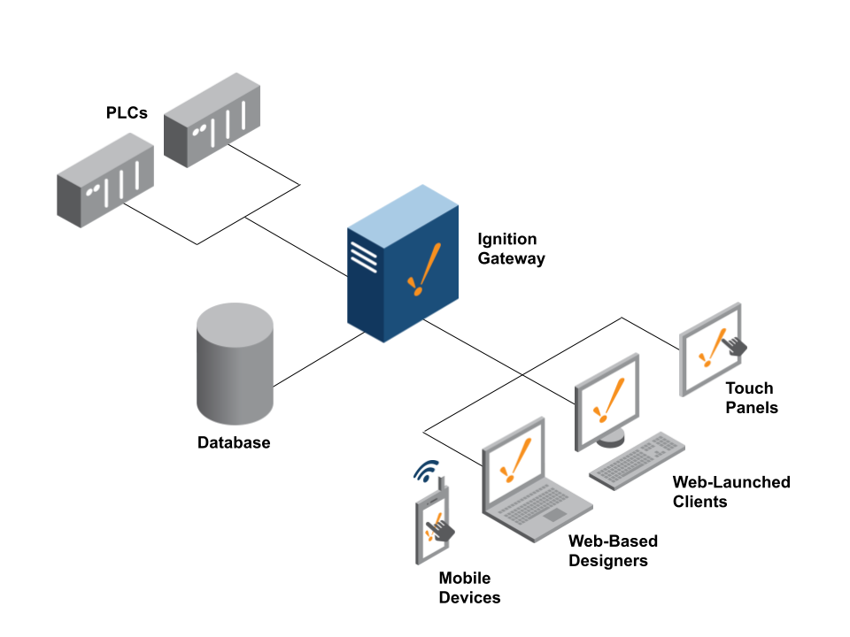
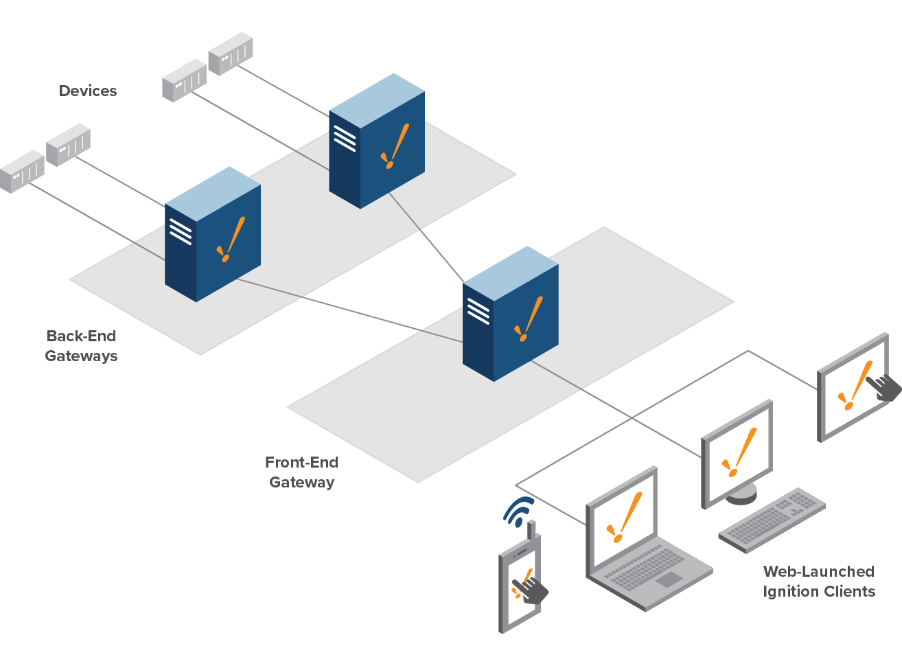
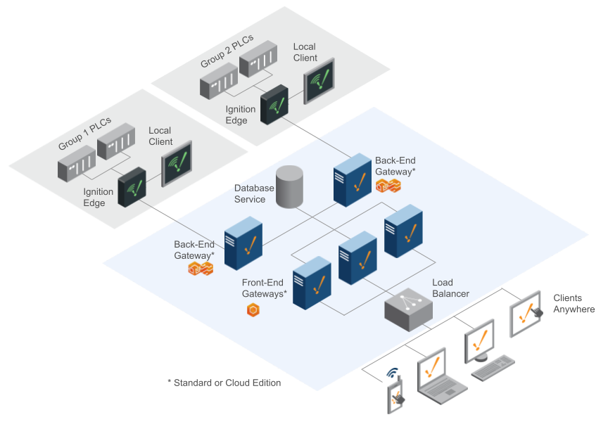

Deployments in a multi-gateway architecture

The five parts of this lab: from gateway architectures to deploying on demo-oatmakers
- Part 1Architecturesstandalone, frontend-backend, multi-site
- Part 2Repos and pipelineshow a repository maps onto each shape
- Part 3The deploy mechanisma releases folder, promotion by PR, multi-site options
- Part 4Tag ownershipwho may change tags where
- Part 5This lab's repodemo-oatmakers, on a live gateway
Three reference architectures: the repository layout follows the shape
- Standaloneone gateway does everything
- Frontend-backendsplit the humans from the plant floor
- Multi-site enterprisehub and spoke
Standalone: one gateway does everything

Frontend and backend gateways: split the humans from the plant floor

Multi-site with an enterprise level: hub and spoke

How repositories and pipelines map onto each architecture
- The baselinewhat labs 04 to 06 built
- Frontend-backendone repo, routed to two kinds of gateway
What we built in labs 04 to 06: one repository, one site, one gateway
oatmakers-repo/├─ projects/│ ├─ oatmakers/│ └─ oatmakers-packaging/├─ gateways/ gateway config├─ db-migration/└─ .github/workflows/deploy.yml
One repository, one pipeline, one gateway, in local, test and production.
The plant, the drawing from Part 1: PLCs, one Ignition gateway, the database and the Perspective clients.
One repository holds everything that gateway runs: projects, gateway config, migrations and the workflow.
One pipeline: a push to main runs validate, then deploy.yml.
The self-hosted runner ships projects and config into the gateway and runs the migrations straight against the database.
Frontend-backend: one repository, several projects, a config folder per gateway
oatmakers-repo/├─ projects/ all projects│ ├─ oatmakers/ HMI│ ├─ oatmakers-shared/ its parent│ ├─ oatmakers-packaging/│ └─ oatmakers-packaging-shared/├─ gateways/ config per gateway│ ├─ gw-frontend/ sessions, auth│ └─ gw-backend/ devices, tags, history└─ .github/workflows/deploy.yml
Two gateways do not mean two repositories: one repo holds all projects and all gateway config.
Still one repository, and still one deploy.yml.
projects/ holds both HMI projects, each with its own parent project it inherits from.
A config folder per gateway: devices and tag providers in the backend folder, sessions and auth in the frontend one.
The pipeline routes: HMI projects, parents and frontend config to the front-end gateway, backend config to the back-end gateways. A screen change and its tag change are one PR.
The deploy mechanism: how a version actually moves
- A releases folderthe bookkeeping: what runs where
- Promotion by PRthe trigger and the approval gate
- Multi-site optionsone repository, or several
A releases folder records which version runs on which gateway
releases/├─ production/│ ├─ gw-site1-backend.yaml│ ├─ gw-site1-frontend.yaml│ ├─ gw-site4-backend.yaml│ ├─ gw-site4-frontend.yaml│ ├─ … sites 2, 3, 5 … 8 …│ └─ gw-central.yaml├─ staging/│ └─ gw-staging.yaml└─ test/ └─ gw-test.yaml tracks main, auto
# releases/production/gw-site4-frontend.yaml gateway: gw-site4-frontend projects: oatmakers: version: v2.0.1 # the hotfix shared: v1.9.2 # its parent, pinned with it oatmakers-packaging: version: v1.4.0 shared: v1.2.0
The bookkeeping that survives any repository layout, usually in its own small repository.
One folder per environment: test, staging, production. Deploy state lives apart from the code that produces it.
One file per gateway: every site pair and gw-central. If a gateway exists, it has a file.
Each project pinned to a version, its parent pinned with it. Change the file, and the pipeline makes it true.
Test tracks main, automatically. Pinning starts where humans need control: staging and production.
A promotion is a pull request in the releases repo
# PR: promote oatmakers v2.0.1 (site 4 first) releases/production/gw-site4-frontend.yaml (the HMI runs on the frontend gateway) oatmakers: - version: v2.0.0 + version: v2.0.1
The Oatmakers hotfix from day one, done fleet-wide. Every tile is a gateway's release file.
The promotion is a PR: bump oatmakers to v2.0.1 in site 4's frontend file, where the HMI runs. The diff is the release note.
Merge is the trigger. TEST tracks main, so it has run the fix since the code merged: no release PR for test, ever.
Site 4 goes first: its own runner deploys and runs the health checks, then we watch for half an hour.
Then the other sites, each deployed by its own runner. A failed check stops everything after it.
gw-central flips last, once every site it aggregates is healthy: that is what "released" means.
Rollback reverts the release PR: the pins flip back to v2.0.0, and the pipeline makes them true again.
Multi-site option A: one repository, a separate version tag per project
oatmakers-repo/projects/├─ oatmakers/ HMI├─ oatmakers-shared/ its parent├─ oatmakers-packaging/└─ oatmakers-packaging-shared/ a41 ─ oatmakers@v2.0.0b52 ─ oatmakers-packaging@v1.4.0d74 ─ oatmakers-shared@v1.9.2e85 ─ oatmakers@v2.0.1 the hotfix
# releases/production/gw-site4-frontend.yaml gateway: gw-site4-frontend projects: oatmakers: version: v2.0.1 # its own tag shared: v1.9.2 # its parent, alongside
Each project releases on its own tag; a site's release file names what that site runs.
A tag names its project: oatmakers@v2.0.1 releases the HMI, and the deploy ships only the folder the prefix names.
Site 4's release file pins the project at its own tag, and its parent alongside: the HMI inherits from it.
The deploy reads that one file and ships the project and its parent to site 4's gateway, and nowhere else.
Nothing else moves: site 2 and central keep their pins until their own file changes, through the same PR machinery.
Multi-site option B: several repositories, each deploying its own part
A repository per site, plus one for the enterprise level
A repository per vendor project
Config repositories separate from one projects repository
Three splits you can make and mix; each wire shows what that repository's pipeline deploys where.
Per site: each site team's repo only reaches its own site's gateways; the enterprise repo deploys gw-central.
Per vendor: the vendor's repo carries only the palletizer project, to exactly two gateways.
Config split from projects: infra owns the config repos, the app team owns the projects repo.
Choosing a repository layout: pick the fewest repositories that answer your questions
| Layout | Strongest when | Watch out for |
|---|---|---|
| One repository for everything | One team owns infra and development; little overhead; the shared library is used everywhere; a cross-gateway change is one reviewable PR. | Everyone with access sees everything; vendors need carve-outs; the repo and its churn grow with the fleet. |
| Repository per site + enterprise | Site teams work at their own pace; access ends at the site boundary. | A shared change is N pull requests; without bookkeeping the sites drift apart silently. |
| Vendor repository per project | External parties contribute without seeing the plant. | Needs disciplined project-level deploys and a clear interface contract (which tags and queries the project may expect). |
| Config repos + one projects repo | Infra and application are different teams; all projects together keep the shared library easy. | One feature can need two PRs in two repos, in the right order. |
Tag management: decide who owns the tags
- Everything elsechanges in Git, flows to production
- Tagschange on production, against the deploy direction
Decide who owns the tags: the development team or production
Operators change tags on production
Night shift trims an alarm limit at 03:00. Saturday's deploy ships the tag export from Git: the limit is silently back. If operators may change tags, the deploy must not blindly overwrite them.
Process engineers create tags on production
Forty new tags born on production. Test has never seen them, so screens cannot be tested against them, and a strict "match Git" deploy would delete them. They need a way back into test and the repo.
Development is master
Every tag change travels through the repo and the pipeline; editing on production is forbidden (or exported back the same day). The deploy may overwrite the provider.
Fits when tags change rarely and the development team owns the processProduction is master
Tags are exported from production into the repo on a schedule; the deploy never touches the provider. Test refreshes from those exports, so scenario 2's tags reach test too.
Fits when engineers and operators live in the tag browserSplit ownership
Test owns structure (UDT definitions, folders, new tags); production owns values (setpoints, alarm limits). The deploy ships definitions and never writes values, or you split by provider or folder.
Fits most plants, if the split is written down and enforcedTags also change on production: decide who owns them, write it down and let the pipeline enforce it. Scenario 1: an alarm limit trimmed at 03:00, silently put back by Saturday's deploy. Scenario 2: production has tags the test gateway has never seen. Model 1: all tag changes travel through the repo; the deploy may overwrite the provider. Model 2: tags flow from production into the repo; the deploy never touches the provider. Model 3: test owns structure, production owns values; the deploy never writes values.
How demo-oatmakers deploys through one release file
- One public repothe repo behind Mustry's live Oatmakers demo: option A at its smallest
- One production gateway
cloud.mustrysolutions.com - One release file
release.yaml - Local development per laptop
localhost:8088, Designer saves in your working tree
demo-oatmakers: local development and a pinned production deploy
release.yaml what runs on prodprojects/oatmakers/ the shared projectprojects/<you>/ yours, Part 1services/config/ gateway configservices/modules.jsonthird-party-modules/jar-files/jar/db-migration/migrate/.github/workflows/ ci.yml PR checks: CI OK deploy.yml Deploy: production
Build and verify locally. Review the working-tree diff, then open a feature PR. Merging it leaves production at its pinned version.
runs-on: [self-hosted, demo-oatmakers]: the runner next to the production gateway, inside its network.
What the production deploy ships
- Every pinned project, from its own tag
- Config,
modules.json, modules, JARs, migrations from theoatmakerspin - Migrations first; a module or JAR restarts the gateway
- Never: identity, users, API keys
main is protected
- Every change through a pull request
- A green
CI OKand one approval from someone else - Nobody pushes to
main; the Mustry team can bypass
Develop locally, review the change, then promote a tag through release.yaml.
The repo: projects, the gateway payload, release.yaml and the workflows.
Build locally: Designer saves land in your working tree. Verify the behaviour and review the diff before the PR.
Production is pinned: only a merged change to release.yaml starts Deploy. Started by hand from another branch, it refuses.
The production deploy is wide: every pinned project from its own tag, the whole gateway payload from the oatmakers pin.
You cannot approve your own PR: the instructor or a fellow student does.
Release a project: tag the merged main, then pin that tag in release.yaml
# 1 · your feature PR merged: main moved, production did not # 2 · make the release exist, on the merged main git switch main && git pull git tag <yourname>@v1.0.0 git push origin <yourname>@v1.0.0 # 3 · point production at it, by PR git switch -c pin/<yourname>-v1.0.0 # edit release.yaml, then stage ONLY that file git add release.yaml # never git commit -am git commit -m "release: pin <yourname> v1.0.0" git push -u origin pin/<yourname>-v1.0.0
# release.yaml gateway: oatmakers-site-7 projects: oatmakers: v5.1.0 + <yourname>: v1.0.0
CI OK goes red. Pushed the tag afterwards? A tag push does not start CI: Re-run failed jobs.demo-oatmakers runner.
The releases folder as one file: each line pins a project to a tag <project>@vX.Y.Z.
Your feature PR merged: the code is on main. Production keeps its pinned version; Deploy did not run.
Tag the merged main: the prefix names the project, the version names the point in history. Now the release exists.
Pin it on a branch, by PR: one line in release.yaml, and you stage only that file.
Tag before pin, and tag only main: CI enforces both.
One approval, merge: Deploy ships the pinned tags.
Rollback goes through the same review, so migrations must keep the previous screens working.
Take the next free oatmakers@ tag, and check whether a higher pin already contains yours
c1 ─ oatmakers@v5.1.0 pinned in release.yamlc2 ─ A: chart screen mergedc3 ─ B: migration + view merged on c2: oatmakers@v5.2.0 A tags firston c3: v5.2.0 rejected B, same numberon c3: oatmakers@v5.3.0 B: contains c2 AND c3 release.yaml: oatmakers v5.3.0 (B pinned first)
# the next free number: look at the tags, not only at release.yaml git fetch --tags git tag -l 'oatmakers@*' --sort=-v:refname | head -3
git push origin oatmakers@v5.2.0 ! [rejected] oatmakers@v5.2.0 (already exists) git tag -d oatmakers@v5.2.0 && git fetch --tags # next number
# A, before pinning v5.2.0: is my tag inside the pinned one? git merge-base --is-ancestor \ oatmakers@v5.2.0 oatmakers@v5.3.0 && echo "already included"
v5.2.0 over v5.3.0 would quietly remove B's work from production. If your tag is already included, you are live: done.
Everyone who changes the shared project cuts an oatmakers@ tag, so two people will pick the same number.
A merges a chart screen and looks for the next free number in the tags: someone may have tagged without pinning yet.
A tag race: A tags v5.2.0 on c2, B's push of v5.2.0 on c3 is rejected. No harm, as long as nobody moves a pushed tag.
B takes v5.3.0: it contains B's work and A's chart, because a tag carries everything merged before it.
B pins v5.3.0 first. A checks whether v5.2.0 is already inside it. It is: A's chart is live.
Already included means done.
Rules for shipping together to one live gateway
- Small PRs. One view, one migration pair, one module.
- Stage only what you changed:
git add <your paths>, nevergit commit -am. - One release PR in flight at a time. Say in the chat when you start, wait for Deploy to go green.
- Never lower a pin; a pushed tag is permanent. Made a mistake? Fix it on main and cut the next number.
- Announce restarts: a module or a JAR restarts the production gateway.
- Leave the existing demo alone. Your screens, tags and tables carry your name or
Course.
git fetch origin git rebase origin/main # keep EVERY pin main has, # re-apply only your own line git add release.yaml git rebase --continue git push --force-with-lease
The five challenges: where each lives in demo-oatmakers and how it reaches production
| Challenge | Where it lives in demo-oatmakers | Taught in | Reaches production with a new oatmakers@ pin |
|---|---|---|---|
| Third-party module | third-party-modules/ + an entry in services/modules.json | lab 06 | the gateway restarts to load it |
| Library JAR | jar-files/jar/ | lab 06 | copied to the gateway's JAR volume (on its classpath), gateway restarts |
| Migration + referenced secret | an up/down pair in db-migration/migrate/; a connection whose password references POSTGRES_PASSWORD | lab 06 | migrations run before anything ships |
| Simulator device + tags | the device and tag definitions in services/config/ | lab 04: config is files | hot scan, no restart |
| History | a historian from the TimescaleDB-Historian module (already in the repo) + history enabled on the tags | lab 06: modules as data | hot scan, no restart |
Three gateway features the challenges use: module trust, store-and-forward engines, simulator programs
A new module: who trusts it
- Your local gateway accepts it through
ACCEPT_MODULE_LICENSESandACCEPT_MODULE_CERTSindocker-compose.yaml(lab 06). - Recreate, not restart:
docker compose up -d --force-recreate gateway. - The gateway writes
certFingerprintandlicenseAgreementHashinto yourmodules.jsonentry: production trusts the module through those two values.
Store-and-forward engines
- Every database connection and every historian comes with an engine of the same name:
store-and-forward-engine/<name>/. - Plus status tags under
tag-definition/System/Gateway/:Database/,StoreAndForward/(andDevices/for a device). - Stage them with what you added. Never give a connection and a historian the same name: they would share one engine.
A simulator program
- A Programmable Device Simulator runs a program: device menu, Edit Program, one row per value.
- Each row: time interval, browse path, value source, data type. An OPC tag reads it at
ns=1;s=[CourseSim]Ramp.
# the program as CSV
0,"Ramp","ramp(0,100,60,1)","Double"
0,"Sine","sine(-50,50,30,1)","Double"Verify locally, keep migrations in step, inherit from a parent project
# verify your branch on localhost:8088 # review the working-tree diff before the PR git diff # migrations: a number higher than any on main scripts/migrate.sh up # try it on your local database scripts/migrate.sh down 1 # before you switch branches
# inheritance is two fields in project.json # projects/course-lib/project.json "inheritable": true # projects/<you>/project.json "parent": "course-lib" scripts/scan.sh
Next: contribute to demo-oatmakers and deploy to a live production gateway
- We-doMap Oatmakers' eight sites onto the reference architectures, sketch the repo layouts, and walk one release PR on demo-oatmakers end to end: bump a pin in
release.yaml, review, merge, watch Deploy run on thedemo-oatmakersrunner. - You-doBreakout rooms, from
exercises/lab.md. Accept the collaborator invite onMustry-Solutions/demo-oatmakers. Part 0: start your local development gateway. Part 1: a project with your name live on production through a tag and arelease.yamlPR. Part 2: five challenges on the shared oatmakers project. Part 3: build on each other's work. - DebriefThe last lab of the course: the debrief closes all four days. Bring the pipeline you would actually build at your own plant.